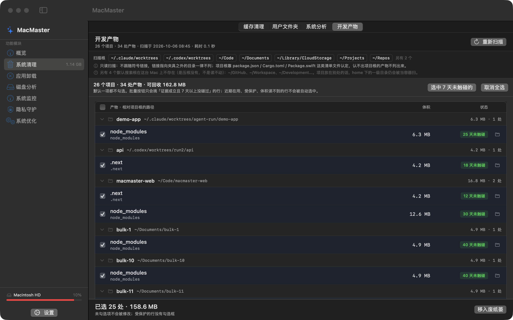
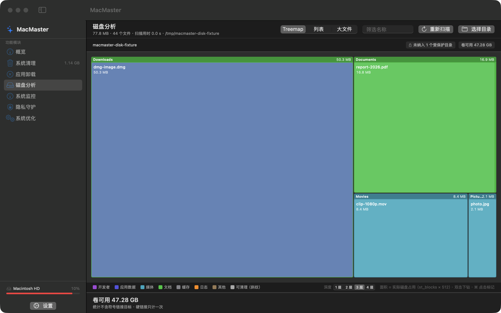
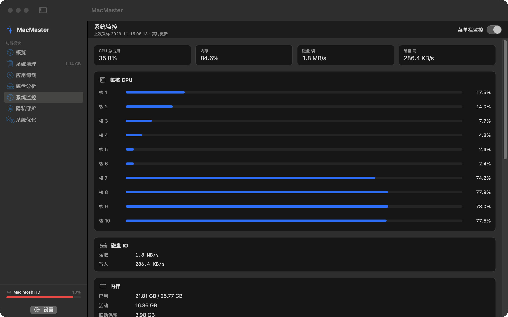
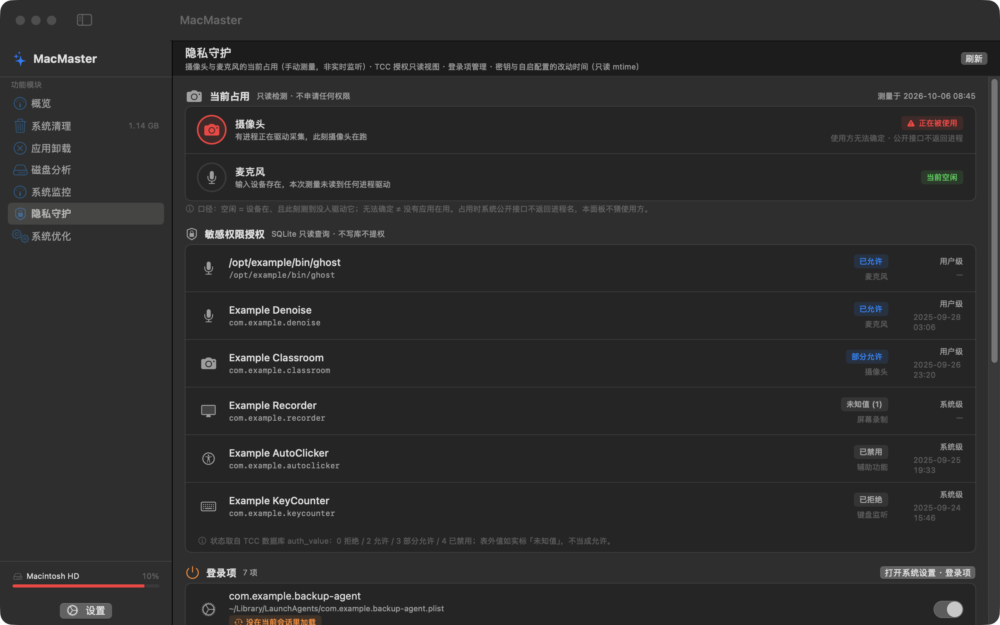

扫描系统缓存、日志与临时文件，按类别列出并标出风险档。默认只预选安全的那几类，删除前要确认一次，动作是「移到废纸篓」，15 秒内可撤回。
卸载应用时尽力找出它留在系统里的痕迹——配置、缓存、容器与支持文件，逐项列出来由你确认。识别靠包名与目录约定推断，没见过的形态会漏列，不会替你打包证。
可视化磁盘空间使用情况，快速定位大文件和占用空间的目录。Treemap 直观展示。
实时监控 CPU、内存、磁盘和网络使用情况。菜单栏显示，一目了然。
检测摄像头与麦克风的当前占用（手动测量，非实时监听），查看 TCC 授权与密钥目录的改动时间，管理登录项启停。
重复文件检测（按内容比对，不只看文件名）、浏览器痕迹清理、系统优化建议清单。它做的是"找出可以处理的对象"，不承诺清理之后速度提升多少。
四张图都是同一台机器上跑出来的窗口实拍，但清单与读数全部来自夹具钩子：项目名是 node_modules / bulk-1 这类合成目录，进程是 com.example.*，温度键是 TZZ*。侧栏那条卷名与占用百分比、"系统清理"后面那格体积、以及磁盘页的"卷可用"没有被夹具顶替——它们是拍摄那台机器的真实状态。

按项目聚合的可重建产物，默认一项都不勾；勾选与删除是分开的两步

Treemap 按体积切分，图例给分类，底部说明面积是实际磁盘占用

每核占用、内存与磁盘 IO，同一套数据也进菜单栏

占用检测、TCC 授权、登录项、改动时间四张卡的只读视图
核心功能模块
原生 Swift 开发
广告、追踪与联网请求
内购与付费入口
MacMaster 只有一个 ad-hoc 签名的本地构建，没有 Developer ID 证书，也没有过苹果公证。这样的东西放进"下载"按钮里，装到别人的机器上只会被 Gatekeeper 直接拦下——所以我们不放那个按钮，也不挂一个点了不响的链接。
拿到源码之后，本地构建这一步是真的能跑通的：
git clone <你的 MacMaster 仓库地址>
cd MacMaster
./Scripts/make-app.sh # 产出 build/MacMaster.app，需要 macOS 14.0+
签名与公证落地之后，这一屏换成真的安装包。在那之前，"免费下载"这四个字我们不说。
适用于 macOS 14.0 或更高版本